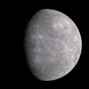
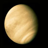
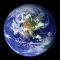
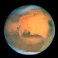
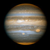

太陽系の惑星
-

水星は太陽系の第一惑星である。地球型の惑星で、太陽系の惑星で最も小さい。公転周期は約88日であり、離心率が0.2程度の楕円軌道を描いて太陽の周りをまわっている。
-

金星は太陽系の第二惑星である。地球型の惑星で、太陽系の惑星の中で、大きさと平均密度が地球に最も近い。しかし、大気中のほとんどは二酸化炭素で、大気圧は地表で約90気圧ある。
-

地球は太陽系の第三惑星である。太陽系のハビタブルゾーンにある唯一の惑星で、地表に多量の水を湛え、多様な生物が存在している。
-

火星は太陽系の第四惑星である。地球型の惑星で、地表に酸化鉄が大量に含まれているため赤く見える。大気は希薄で、大気圧は地球の0.75%程度しかない。
-

木星は太陽系の第五惑星である。ガスを主成分とする木星型の惑星である。直径は地球の11倍で、太陽家の惑星の中で大きさ、質量とも最大の惑星である。